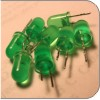
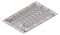

CIRC
02
.:8 LED Fun:.
.:Multiple LEDs:.

(ARDX) .:Arduino Experimentation Kit:. (ARDX)
What We're Doing
We have caused one LED to blink, now it's time to up the stakes. Lets connect eight. We'll also have an opportunity to stretch the Arduino a bit by creating various lighting sequences. This circuit is also a nice setup to experiment with writing your own programs and getting a feel for how the Arduino works.
Along with controlling the LEDs we start looking into a few simple programming methods to keep your programs small.
for() loops - used when you want to run a piece of code several times.
arrays[] - used to make managing variables easier (it's a group of variables).
The Circuit
The Parts
|  | CIRC-02 Breadboard Sheet x1 |
2 Pin Header x4 |
5mm Green LED x8 |
Wire | |||
| 560 Ohm Resistor Green-Blue-Black-Black x8 |
|||||||
Schematic
Resources
.:download:.
Breadboard layout sheet
http://ardx.org/BBLS02
Fritzing diagram
https://wcrsyyc.github.io/ardx/fritzing/CIRC02.fzz
.:view:.
assembly video
http://ardx.org/VIDE02
Code (no need to type everything in just)
Download the Code from ( https://wcrsyyc.github.io/ardx/code/CIRC02-code.txt )
(and then copy the text and paste it into an empty Arduino Sketch)
/* ---------------------------------------------------------
* | Arduino Experimentation Kit Example Code |
* | CIRC-02 .: 8 LED Fun :. (Multiple LEDs) |
* ---------------------------------------------------------
*
* A few Simple LED animations
*/
// LED Pin Variables
int ledPins[] = {2,3,4,5,6,7,8,9}; // An array to hold the pin each LED is
// connected to i.e. LED #0 is connected to pin 2, LED #1, 3 and so on
// to access, ledPins[0] would equal 2 and ledPins[7] would equal 9
/*
* setup() - this function runs once when you turn your Arduino on
* We set the control pins to outputs
*/
void setup()
{
// Set each pin connected to an LED to output mode (pulling high (on) or low (off))
for(int i = 0; i < 8; i++) { // this is a loop and will repeat eight times
pinMode(ledPins[i],OUTPUT); // we use this to set each LED pin to output
} // the code this replaces is below
/* (commented code will not run)
* these are the lines replaced by the for loop above. They do exactly the
* same thing as the one above just needing less typing
pinMode(ledPins[0],OUTPUT);
pinMode(ledPins[1],OUTPUT);
pinMode(ledPins[2],OUTPUT);
pinMode(ledPins[3],OUTPUT);
pinMode(ledPins[4],OUTPUT);
pinMode(ledPins[5],OUTPUT);
pinMode(ledPins[6],OUTPUT);
pinMode(ledPins[7],OUTPUT);
(end of commented code)*/
}
/*
* loop() - this function will start after setup finishes, then repeat
* this calls a function called oneAfterAnother(). if you would like a different
* behaviour uncomment (delete the two slashes) on one of the other lines
*/
void loop() // run over and over again
{
oneAfterAnotherNoLoop(); // turn on each LED one by one then turn each off
//oneAfterAnotherLoop(); // does the same as oneAfterAnotherNoLoop but with
// much less typing
//oneOnAtATime(); // this will turn one LED on then turn the next one
// on turning the former off (one LED will look like
// it is scrolling along the line
//inAndOut(); // lights the two middle LEDs then moves them out
// then back in again
//inAndOutSub(); // does the same as inAndOut but moves duplicate code
// into a separate function
}
/*
* oneAfterAnotherNoLoop() - Light one LED then delay for delayTime then light
* the next LED until all LEDs are on, then turn them off one after another
*
* this does it without using a loop, which makes for a lot of typing.
* oneOnAtATimeLoop() does exactly the same thing with less typing
*/
void oneAfterAnotherNoLoop()
{
int delayTime = 100; // the time (in milliseconds) to pause between LEDs
// make smaller for quicker switching and larger for slower
digitalWrite(ledPins[0], HIGH); // Turns on LED #0 (connected to pin 2 )
delay(delayTime); // waits delayTime milliseconds
digitalWrite(ledPins[1], HIGH); // Turns on LED #1 (connected to pin 3 )
delay(delayTime); // waits delayTime milliseconds
digitalWrite(ledPins[2], HIGH); // Turns on LED #2 (connected to pin 4 )
delay(delayTime); // waits delayTime milliseconds
digitalWrite(ledPins[3], HIGH); // Turns on LED #3 (connected to pin 5 )
delay(delayTime); // waits delayTime milliseconds
digitalWrite(ledPins[4], HIGH); // Turns on LED #4 (connected to pin 6 )
delay(delayTime); // waits delayTime milliseconds
digitalWrite(ledPins[5], HIGH); // Turns on LED #5 (connected to pin 7 )
delay(delayTime); // waits delayTime milliseconds
digitalWrite(ledPins[6], HIGH); // Turns on LED #6 (connected to pin 8 )
delay(delayTime); // waits delayTime milliseconds
digitalWrite(ledPins[7], HIGH); // Turns on LED #7 (connected to pin 9 )
delay(delayTime); // waits delayTime milliseconds
// Turns Each LED Off in the reverse sequence
digitalWrite(ledPins[7], LOW); // Turns on LED #0 (connected to pin 2 )
delay(delayTime); // waits delayTime milliseconds
digitalWrite(ledPins[6], LOW); // Turns on LED #1 (connected to pin 3 )
delay(delayTime); // waits delayTime milliseconds
digitalWrite(ledPins[5], LOW); // Turns on LED #2 (connected to pin 4 )
delay(delayTime); // waits delayTime milliseconds
digitalWrite(ledPins[4], LOW); // Turns on LED #3 (connected to pin 5 )
delay(delayTime); // waits delayTime milliseconds
digitalWrite(ledPins[3], LOW); // Turns on LED #4 (connected to pin 6 )
delay(delayTime); // waits delayTime milliseconds
digitalWrite(ledPins[2], LOW); // Turns on LED #5 (connected to pin 7 )
delay(delayTime); // waits delayTime milliseconds
digitalWrite(ledPins[1], LOW); // Turns on LED #6 (connected to pin 8 )
delay(delayTime); // waits delayTime milliseconds
digitalWrite(ledPins[0], LOW); // Turns on LED #7 (connected to pin 9 )
delay(delayTime); // waits delayTime milliseconds
}
/*
* oneAfterAnotherLoop() - Light one LED then delay for delayTime then light
* the next LED until all LEDs are on, then turn them off one after another
*
* this does exactly the same as oneOnAtATimeNoLoop() using loops which makes
* for a lot less typing
*/
void oneAfterAnotherLoop()
{
int delayTime = 100; // the time (in milliseconds) to pause between LEDs
// make smaller for quicker switching and larger for slower
// Turn Each LED on one after another
for(int i = 0; i <= 7; i++){
digitalWrite(ledPins[i], HIGH); // Turns on LED #i; each time this runs, i
delay(delayTime); // gets one added to it so this will repeat
} // 8 times. the first time i will = 0, the
// final time i will equal 7;
// Turn Each LED off one after another
for(int i = 7; i >= 0; i--) { // same as above but rather than starting at 0 and
// counting up, we start at seven and count down
digitalWrite(ledPins[i], LOW); // Turns off LED #i; each time this runs, i
delay(delayTime); // gets one subtracted from it so this will
} // repeat 8 times. the first time i will = 7,
// the final time it will equal 0
}
/*
* oneOnAtATime() - Will light one LED then the next turning off all the others
*/
void oneOnAtATime()
{
int delayTime = 100; // the time (in milliseconds) to pause between LEDs
// make smaller for quicker switching and larger for slower
int offLED = 7; // the last led (index number) that was turned on
for(int i = 0; i <= 7; i++) {
digitalWrite(ledPins[i], HIGH); // turn on LED #i
digitalWrite(ledPins[offLED], LOW); // turn off the LED we turned on last time
offLED = i; // remember which LED was last turned on
delay(delayTime);
}
}
/*
* inAndOut() - This will turn on the two middle LEDs then the next two out,
* making an out and in look
*/
void inAndOut()
{
int delayTime = 100; // the time (in milliseconds) to pause between LEDs
// make smaller for quicker switching and larger for slower
int offLED1 = 2; // the last led (index number) that was turned on (first)
int offLED2 = 5; // the last led that was turned on (second)
// runs the LEDs out from the middle
for(int i = 3; i >= 0; i--) {
int onLED2 = 7 - i; // this is the second LED to go on ie. LED #7 when i = 0
// and LED #4 when i = 3
digitalWrite(ledPins[offLED1], LOW); // turns off first LED turned on last time
digitalWrite(ledPins[offLED2], LOW); // turns off second LED turned on last time
digitalWrite(ledPins[i], HIGH); // turns on the new LED
digitalWrite(ledPins[onLED2], HIGH); // turns on the new LED
offLED1 = i; // remember which LEDs were just turned on
offLED2 = onLED2;
delay(delayTime);
}
// runs the LEDs into the middle
for(int i = 0; i <= 3; i++) {
int onLED2 = 7 - i; // this is the second LED to go on ie. LED #7 when i = 0
// and LED #4 when i = 3
digitalWrite(ledPins[offLED1], LOW);
digitalWrite(ledPins[offLED2], LOW);
digitalWrite(ledPins[i], HIGH);
digitalWrite(ledPins[onLED2], HIGH);
offLED1 = i;
offLED2 = onLED2;
delay(delayTime);
}
}
/*
* inAndOutStep() - This turns on 2 LEDs, and turns 2 others off.
*/
void inAndOutStep(int offLED1, int onIndex)
{
int delayTime = 100; // the time (in milliseconds) to pause between LEDs
int onLED2 = 7 - onIndex; // the second LED to turn on
int offLED2 = 7 - offLED1; // the second LED to turn off
digitalWrite(ledPins[offLED1], LOW);
digitalWrite(ledPins[offLED2], LOW);
digitalWrite(ledPins[onIndex], HIGH);
digitalWrite(ledPins[onLED2], HIGH);
delay(delayTime);
}
/*
* inAndOutSub() - This will turn on the two middle LEDs then the next two out,
* making an out and in look. This does the same thing as inAndOut(), but with
* a function to *refactor* the common code, which will be less typing.
*
* One of the standard programming practices is DRY (Don't repeat yourself). When
* the same, or very similar, thing is being done multiple times, the code for
* it can often be written once, then *called* from each place that needs it.
*/
void inAndOutSub()
{
int offLED1 = 2; // the last led (index number) that was turned on (first)
// runs the LEDs out from the middle
for(int i = 3; i >= 0; i--) {
inAndOutStep(offLED1, i);
offLED1 = i;
}
// runs the LEDs into the middle
for(int i = 0; i <= 3; i++) {
inAndOutStep(offLED1, i);
offLED1 = i;
}
}
Not Working? (3 things to try)
Some LEDs Fail to Light
It is easy to insert an LED backwards. Check the LEDs that aren't working and ensure they are the right way around.
Operating out of sequence
With eight wires it's easy to cross a couple. Double check that the first LED is plugged into pin 2 and each pin there after.
Starting Afresh
Its easy to accidentally misplace a wire without noticing. Pulling everything out and starting with a fresh slate is often easier than trying to track down the problem.
Making it Better?
Switching to Loops:
in the loop() function there are 5 lines. The last four all start with a '//'. this means the line is treated as a comment (not run). To switch the program to use loops change the void loop() code to:
//oneAfterAnotherNoLoop(); oneAfterAnotherLoop(); //oneOnAtATime(); //inAndOut(); //inAndOutSub();
Upload the program, and notice that nothing has changed. You can take a look at the two functions, each does the same thing, but use different approaches (hint the second one uses a for loop)
Extra Animations:
Tired of this animation? Then try the other two sample animations. Uncomment their lines and upload the program to your board and enjoy the new light animations. (delete the slashes in front of row 3, 4 and then 5)
Testing out your own Animations:
Jump into the included code and start changing things. The main point is to turn an LED on use:
digitalWrite(pinNumber, HIGH);
Then to turn it off use;
digitalWrite(pinNumber, LOW);
"pinNumber" needs to be a number (2-9), or a variable that is set to a number in that range.
Type away, regardless of what you change you won't break anything.